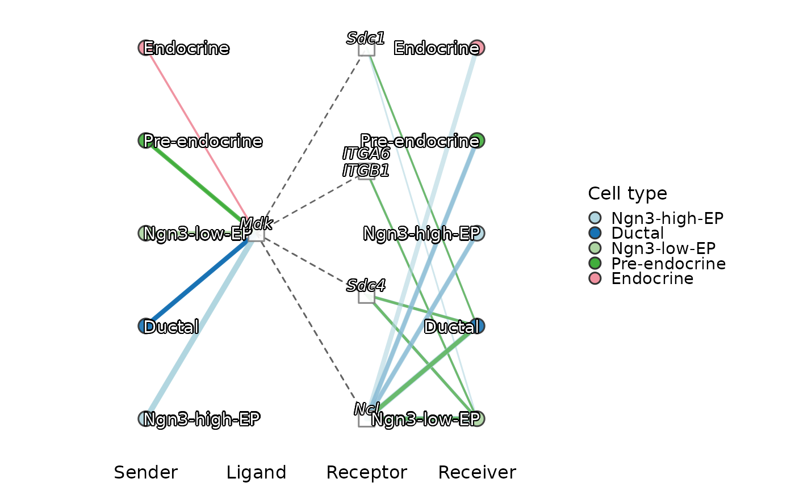
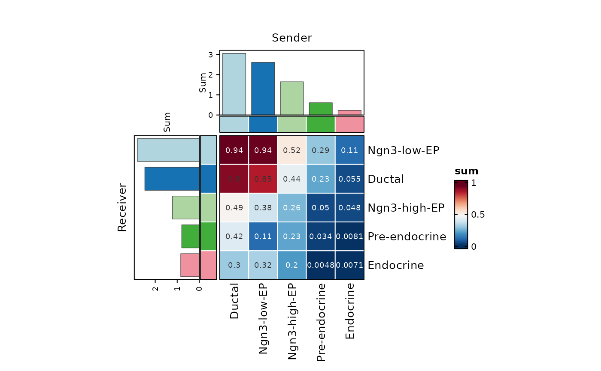
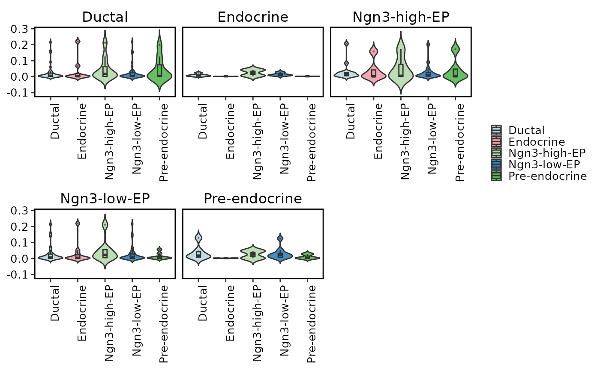

Run CellChat analysis
Arguments
- srt
A
Seuratobject.- group.by
Metadata column(s) used to color cells.
- species
"Homo_sapiens","Mus_musculus", or"zebrafish".- split.by
Metadata column to facet by.
- annotation_selected
Cell types to include.
NULLuses all.- group_column
Metadata column defining conditions or groups.
- group_cmp
Pairwise condition comparisons for differential CellChat.
- thresh
Threshold for centrality scores.
- min.cells
Minimum expressed cells required for genes used in CCC.
- do.fast
Use CellChat's fast Wilcoxon via
presto(must be installed).- backend
Post-processing / unified CCC table backend. Does not change upstream CellChat inference.
- assay
Assay to use.
NULLuses the default assay.- layer
Assay layer to use.
- verbose
Whether to print the message. Default is
TRUE.
Examples
data(pancreas_sub)
pancreas_sub <- RunStandardWorkflow(pancreas_sub)
#> ℹ [2026-09-05 16:26:01] Start standard processing workflow...
#> ℹ [2026-09-05 16:26:01] Checking a list of <Seurat>...
#> ! [2026-09-05 16:26:01] Data 1/1 of the `srt_list` is "unknown"
#> ℹ [2026-09-05 16:26:01] Perform `NormalizeData()` with `normalization.method = 'LogNormalize'` on 1/1 of `srt_list`...
#> ℹ [2026-09-05 16:26:01] Perform `FindVariableFeatures()` on 1/1 of `srt_list`...
#> ℹ [2026-09-05 16:26:01] Use the separate HVF from `srt_list`
#> ℹ [2026-09-05 16:26:01] Number of available HVF: 2000
#> ℹ [2026-09-05 16:26:01] Finished check
#> ℹ [2026-09-05 16:26:01] Perform `ScaleData()`
#> ℹ [2026-09-05 16:26:01] Perform pca linear dimension reduction
#> ℹ [2026-09-05 16:26:02] Use stored estimated dimensions 1:23 for Standardpca
#> ℹ [2026-09-05 16:26:02] Perform `Seurat::FindClusters()` with `cluster_algorithm = 'louvain'` and `cluster_resolution = 0.6`
#> ℹ [2026-09-05 16:26:02] Reorder clusters...
#> ℹ [2026-09-05 16:26:02] Skip `log1p()` because `layer = data` is not "counts"
#> ℹ [2026-09-05 16:26:02] Perform umap nonlinear dimension reduction
#> ✔ [2026-09-05 16:26:12] Standard processing workflow completed
pancreas_sub <- RunCellChat(
pancreas_sub,
group.by = "CellType",
species = "Mus_musculus"
)
#> ℹ [2026-09-05 16:26:12] Start CellChat analysis
#> [1] "Create a CellChat object from a data matrix"
#> Set cell identities for the new CellChat object
#> The cell groups used for CellChat analysis are Ductal, Endocrine, Ngn3-high-EP, Ngn3-low-EP, Pre-endocrine
#> ! [2026-09-05 16:26:12] Function "CellChatDB.mouse" not found in CellChat namespace
#> The number of highly variable ligand-receptor pairs used for signaling inference is 841
#> triMean is used for calculating the average gene expression per cell group.
#> [1] ">>> Run CellChat on sc/snRNA-seq data <<< [2026-09-05 16:26:14.406301]"
#> [1] ">>> CellChat inference is done. Parameter values are stored in `object@options$parameter` <<< [2026-09-05 16:26:36.062497]"
#> ✔ [2026-09-05 16:26:36] CellChat analysis completed
CCCNetworkPlot(
pancreas_sub,
method = "CellChat",
plot_type = "bipartite"
)

CCCHeatmap(
pancreas_sub,
method = "CellChat",
plot_type = "heatmap"
)

CCCStatPlot(
pancreas_sub,
method = "CellChat",
plot_type = "violin",
top_n = 50
)
